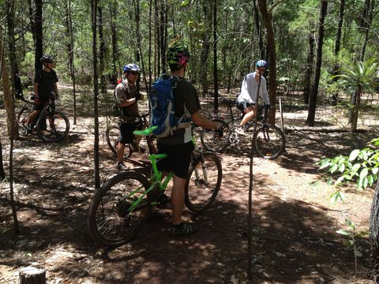

Videos from quad, hexcopters and helmets
2012
I have posted videos filmed from the YF680 hexcopter and TBS Discovery Pro using a GoPro. Enjoy...
SeanMac.Net - videos and photos served locally:
YouTube - Choose HD option from Settings Menu - Select 720p or 1080p:
Howard Springs Pine Forest - New Section
Saturday, November 10th, 2012
Mark, Alan and myself met up at Mark's place before ventruing out to the Howard Springs Pine forest. It was Alan's first ride in Darwin and Mark's first ride on the new section of pine forest track
Sunday Ride Ride - Lee Point
Sunday, July 8th, 2012
{kind=link}
Sunday Ride Ride - Lee Point
Sunday, July 1st, 2012
{kind=link}
Lunchtime!
Sunday, June 19th, 2012
Penny and I in my new (crap) corner desk having some lunch and watching some youtubes...
East Point AeroModellers Club
Sunday, June 17th, 2012
I usualy visit the East Point on a Sunday to check out the planes and helecopters and have a chat with some of the pilots about how and why they do this (sometimes expensive - if you crash) hobby.
If you want to get into this or just come down for a look and the amazing flying abilities of some of these guys and girls, you check out thier website for upcomming calander entries: FlyEastPoint.com
Sunday Ride Ride - Johnson New Trail (Near Palmerston)
Sunday, May 27th, 2012
{kind=link}
Spokes NT Ride - Spokes NT Store to Howard Springs Pine Forest (New Section)
Sunday, May 12th, 2012
{kind=link}
Spokes NT Ride - Charles Darwin National Park
Saturday, April 21st, 2012
About 17 riders gathered for the trip through CDNP. It has been a while since I last rode with them and was good to catch up with familiar faces. The ride was short but you worked hard for it with no breeze and high humidity it wasn't easy. Map of ride TBA...New Bike Build
Monday, April 16th, 2012
I have completed the bike build and now ride it to work regularly.Sunday Ride - Howard Springs Pine Forest
Sunday, April 15th, 2012
Caught up with JC and Q for a tour of the extended "New Howard Springs Pine Forest Track". Q lead us into a set of fire trails and I was suspecting us of getting lost, but after following a series of orange arrow markers, we found the start of the track. After talking to some Spokes NT RIde friends about what the markers were, I found out that they are apart of the extended track. Next time we will try to start at the real beginning point and see how it goes. Map of ride TBA...{kind=link}

TED - Taylor Wilson: Yup, I built a nuclear fusion reactor
Wednesday, April 4th, 2012
Upular (UP Remix) by Pogo
Monday, March 12th, 2012
An Austrlian guy going by the name Nick Bertke (aka Pogo) does remixes of movies and games using sound from the source material to create a remix soundtrack. Very creative and facinating to listen too. PogoMix Website Pogomix Upular
Friday Ride - Lee Point
Friday, February 24th, 2012
Q and I did a longer ride than usual for a Friday. I asked how long do you want to ride today? His response to this was "we can ride as long as you like"... Thus the phrase "Quent-a-thon" was coined!{kind=link}
Wednesday Ride - Lee Point
Wednesday, February 22nd, 2012
{kind=link}
Friday Ride - Lee Point
Friday, February 17th, 2012
{kind=link}

Spokes NT Ride - Lee Point
Saturday, February 11th, 2012
A good gathering for the ride across the road from the Beachfrount Motel in Nightcliff, then off to Lee Point in two groups to tackle the various tracks etc.
{kind=link}
Viral: What Mountain Bikers Say
Thursday, January 25th, 2012
Mountain bikers say funny things. This hilarious video by NSMB says it quite well. We have a language that seems so natural but makes sense only to us.
Hind Helicopter RC Model
Thursday, January 5th, 2012
Saw this on the way to the city. Someone with a lot of time and dedication has a 1/5th? scale Hind helecopter. He is on his way to the East Point Model Plane Club for a flight.
{kind=link}
{kind=link}
AutoManic 'un Trick
Thursday, January 6th, 2012
Go to Top of Page